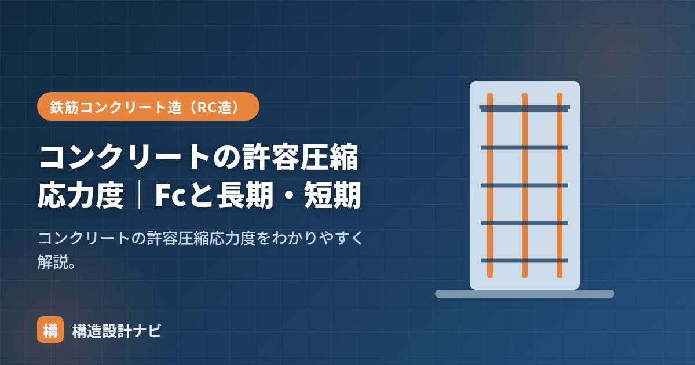

コンクリートの許容圧縮応力度｜Fcと長期・短期

許容圧縮応力度とは、コンクリートが圧縮に対して安全に負担できる応力度の上限として、設計上定められた値のことです。設計基準強度Fcに一定の係数を掛けて求め、許容応力度計算（一次設計）で部材の断面が安全かどうかを判定するために使います。
- 許容圧縮応力度は長期＝Fc/3、短期＝2Fc/3で求める。
- 長期は常時荷重、短期は地震・暴風時の荷重に対応する値。
- 柱・梁の圧縮側の検討で、実際の応力度と比較して安全性を確認する。
計算式
短期許容圧縮応力度 ＝ 2 × Fc ÷ 3 短期は長期の2倍
例：Fc21なら長期7・短期14 N/mm²、Fc24なら長期8・短期16 N/mm²です。同じ部材でも、常時作用する固定荷重・積載荷重を検討する長期と、地震・暴風など短時間の荷重を検討する短期とでは、許容できる応力度の大きさが異なる点がポイントです。
長期・短期の使い分け
| 長期（Fc/3） | 短期（2Fc/3） | |
|---|---|---|
| 対象の荷重 | 固定荷重・積載荷重（常時） | 地震・台風（短時間） |
| 考え方 | 長くかかるので余裕を大きく | 短時間なので大きな応力を許容 |
長期は建物が存在する限りずっとかかり続ける荷重を対象とするため、クリープ（長期間の持続荷重による変形の進行）なども考慮して安全率を大きめに取ります。短期は地震・台風のような一時的で発生頻度の低い荷重が対象のため、許容できる応力度を長期より大きく設定しています。
実務での使い方
柱の圧縮や梁の曲げ圧縮側の検討で、コンクリートの圧縮応力度がこの許容値以下になることを確認します。引張側は鉄筋が負担します。実際の応力度は、軸力や曲げモーメントを断面積・断面係数で割って求め、長期・短期それぞれについて許容圧縮応力度と比較します。
Fcの値が大きいほど許容圧縮応力度も大きくなるため、高い応力度が生じる柱脚部などでは高強度コンクリートを採用して断面を抑える設計も行われます。逆に許容応力度に対して余裕がありすぎる場合は、無駄にコンクリート強度を上げず、コストとのバランスを取ります。
Q1. なぜ長期はFc/3、短期は2Fc/3という数値なのですか？
コンクリートは、破壊に至る応力度（終局的な強度）に対して十分な安全余裕を持たせるため、長期は約1/3、短期はその2倍にあたる約2/3を許容応力度としています。長期は荷重が持続することによる強度低下（クリープの影響）も考慮し、より安全側の係数が設定されています。
Q2. 許容引張応力度とは違うのですか？
はい、別の値です。コンクリートは圧縮には強い一方、引張には弱い材料のため、引張側は鉄筋が負担する設計が基本です。許容引張応力度は、ひび割れ発生の検討などで補助的に扱われることはありますが、主要な安全性の検討は圧縮応力度と鉄筋の引張応力度で行います。
「コンクリートの許容応力度」「許容応力度計算」「強度の単位」をどうぞ。
耐震診断で古い柱の断面を見直すとき、長期の許容圧縮応力度に対する余裕がほとんど残っていない事例に何度も出会いました。数値上ぎりぎりでも、ひび割れや中性化の進行状況まで見て総合的に判断するよう心がけています。
Fcごとの許容圧縮応力度の一覧
設計でよく使うFcについて、長期・短期の値をまとめておきます。暗算しやすいよう、Fcを3で割るだけの単純な関係です。
| 設計基準強度 Fc | 長期許容圧縮応力度（Fc/3） | 短期許容圧縮応力度（2Fc/3） | 主な用途 |
|---|---|---|---|
| 18 N/mm² | 6.0 N/mm² | 12.0 N/mm² | 捨てコン、簡易な構造物 |
| 21 N/mm² | 7.0 N/mm² | 14.0 N/mm² | 小規模建築物 |
| 24 N/mm² | 8.0 N/mm² | 16.0 N/mm² | 一般的な集合住宅・事務所 |
| 27 N/mm² | 9.0 N/mm² | 18.0 N/mm² | 中層建築物 |
| 30 N/mm² | 10.0 N/mm² | 20.0 N/mm² | 中高層建築物 |
| 36 N/mm² | 12.0 N/mm² | 24.0 N/mm² | 高層建築物の下層階 |
検定の計算例
実際に、柱の圧縮応力度が許容値に収まるかを確認してみましょう。
条件：断面600mm×600mmのRC柱、Fc24、長期の軸力 N＝2,000kN
圧縮応力度 σ ＝ N ÷ A ＝ 2,000,000 N ÷ 360,000 mm² ≒ 5.6 N/mm²
長期許容圧縮応力度 ＝ 24 ÷ 3 ＝ 8.0 N/mm²
検定 ： 5.6 ≦ 8.0 → OK（検定比 0.70）
この柱は許容値に対して7割の応力度なので、余裕があると判断できます。実際の設計では、軸力に加えて曲げモーメントも作用するため、軸力による応力度と曲げによる応力度を足し合わせて検討します。
実際の応力度を許容応力度で割った値を検定比といい、1.0以下であればOKです。実務では、この検定比を見て断面の妥当性を判断します。0.9台なら効率のよい設計、0.3台なら断面が過大かもしれない、といった具合です。ただし柱は、意匠上の制約や階の統一、施工性の観点から、必ずしも検定比を1.0に近づけることが最適とは限りません。
まとめ
- 許容圧縮応力度は長期＝Fc/3、短期＝2Fc/3。
- 長期は常時荷重、短期は地震・台風に使う。短期は長期の2倍。
- 圧縮はコンクリート、引張は鉄筋が負担する。
- 実際の応力度と比較して、部材断面の安全性を許容応力度計算で確認する。